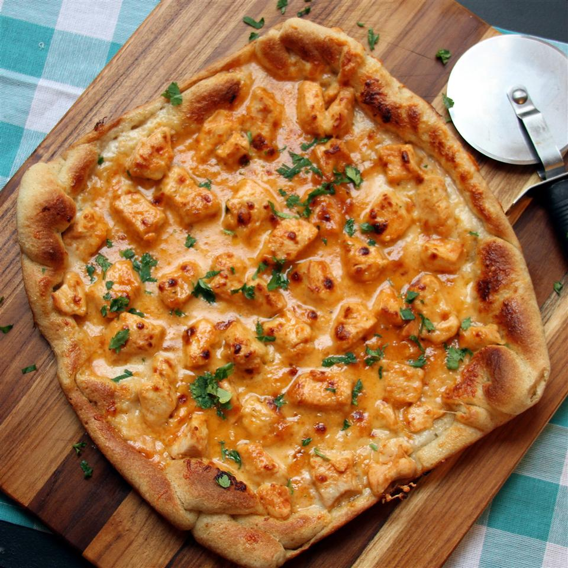

Honey and Chicken Pizza

Ingredients
- ½ cup honey
- tablespoons sriracha sauce, or more to taste
- 2 skinless, boneless chicken breasts, cut into 3/4-inch pieces
- 1 (10 ounce) container refrigerated pizza crust
- ⅔ cup ranch dressing
- 1 cup Colby Jack cheese
Recipe instrictions
- Preheat Panasonic Countertop Induction Oven to Medium on the "Grill" setting.
- Mix honey and sriracha sauce together in a bowl.
- Spread chicken on the grill pan and set the timer for 4 minutes. Turn chicken after 2 minutes. Remove from the oven and stir into the honey mixture.
- Unroll pizza crust flat onto the grill pan. Spread ranch dressing on top. Remove chicken from the honey mixture and place on top of the ranch dressing. Sprinkle Colby Jack cheese over chicken.<
- Place pizza in the oven and press "Auto Cook." Select the frozen pizza setting, 12-inch size. Allow pizza to cook until timer goes off, about 13 minutes. Cut pizza into slices.
Back to main page